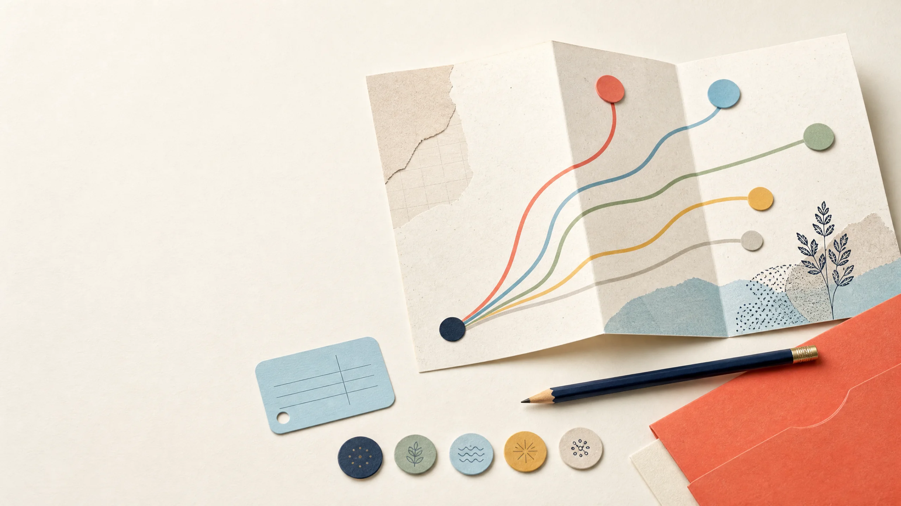

Notice signals
Write down activities that feel engaging, sustainable, and meaningful—not only impressive.
 Toolyfi
Toolyfi
Use a short local reflection to surface three unranked career themes, questions worth researching, and small experiments worth trying. It is a conversation starter, not a career prediction.

Toolyfi
Select the statements that feel useful today. The local tool shows three themes to compare, not a ranked answer or an instruction to choose a specific degree, school, or profession.
This helps frame a near-term exploration step; it does not determine your options.
Choose up to two. You can change your answers and generate another shortlist.
Choose no more than two interests.
Choose up to two. A preference is not a fixed personality label.
Choose no more than two work modes.
This adds a small context signal, not a recommendation.
Interests, skills, values, opportunities, and constraints all matter. A local quiz can help you formulate questions; it cannot collect enough evidence to make a life decision for you.
Write down activities that feel engaging, sustainable, and meaningful—not only impressive.
Use a short project, conversation, course sample, or observation to test an assumption.
Verify current study, licensing, cost, and entry requirements with official local sources.
Weigh personal circumstances and advice alongside evidence; the final decision is yours.
Career questions can feel urgent because they combine identity, money, family expectations, education, time, health, opportunity, and uncertainty. A tool that gives one confident-looking answer may feel comforting in the moment, but it cannot see the full situation behind the screen. It does not know the institutions available to you, the accessibility support you may need, the people you care for, your financial constraints, the language you work in, the jobs in your region, or the experiences that have shaped what you want. That is why this Toolyfi page is intentionally an exploration tool rather than a prediction engine.
The local reflection asks about interests, work modes, starting context, and your next-step goal. Those answers create three unranked themes to investigate. A theme is a broad area such as technology and systems, people and support, business and operations, creative communication, or research and analysis. It is not a command to choose a degree, a statement about what you are capable of, or a claim about admission, salary, job security, or happiness. Think of it as a structured prompt for better questions.
Career exploration is useful when it increases your evidence and your options. It becomes unhelpful when a short quiz is treated as permission to stop asking questions.
A self-assessment can give you vocabulary for patterns you have noticed but not named. You may realize that you enjoy solving structured problems, explaining ideas to people, designing something visual, investigating a question, or organizing a process. You may notice that you prefer a fast practical project to a long abstract task, or that you value collaboration more than you expected. These observations are useful inputs for exploration because they help you choose a next experiment.
It cannot measure all your skills, assess the quality of a program, tell you how a field will change, or determine whether a route is financially practical. It cannot know whether you will enjoy an occupation after weeks of routine work rather than five minutes of reading about it. It also cannot replace a qualified counselor who can consider your individual history and local context. Treat an online reflection as one source of ideas among many, not as a high-stakes assessment.
Government-supported exploration resources often separate interests, skills, and work values rather than collapsing them into a single label. They also encourage users to investigate occupations, training, and requirements after an assessment. This is a useful model for any career conversation. A preference for research is different from having current research skills. An interest in helping people is different from choosing one regulated health profession. A desire for flexibility is different from a guarantee that a field will offer it. Separating these ideas creates room for careful learning.
Interests are activities or questions that repeatedly draw your attention. They may include building digital tools, helping people understand something, working with numbers, writing and design, observing how systems work, or investigating evidence. An interest does not have to be a lifelong passion. It can simply be an area worth testing. Notice what you voluntarily return to, what problems you like to solve, and what kind of learning feels rewarding even when it is difficult.
Work modes describe how you prefer to approach activity. Some people enjoy structured analysis; others gain energy from explaining, coordinating, making, testing, or working independently. Most roles use more than one mode. A software professional may collaborate constantly. A healthcare worker may use data and structured processes. A designer may spend much of the day researching and presenting. The categories in this tool are deliberately broad because they are prompts for reflection, not personality boxes.
Values matter as much as interests. You might care about stability, service, creativity, flexibility, learning, location, autonomy, a predictable schedule, or a particular kind of community. Values can change as your responsibilities change. Make a short list of what you need from your next stage, then ask whether an option realistically supports those needs. An admired career may be a poor fit if its pathway, work patterns, or tradeoffs do not fit the life you want to build.
The scoring model is intentionally simple and visible. Each selected interest provides the strongest signal to one or more broad themes. Each selected work mode provides a supporting signal. The stated next-step goal provides a smaller context signal. The page then shows three themes without ranking them as first, second, or third. Ties are kept as themes to explore rather than treated as a mathematical verdict. You can change answers and generate a new shortlist without creating an account or submitting an assessment profile.
This model has important limits. It does not collect grades, calculate eligibility, pull current admissions data, compare colleges, estimate pay, assess personality, predict labor markets, or use hidden behavioral data. A high or low score never appears because the tool does not claim to measure suitability. The point is to avoid the false precision that can make an arbitrary output look more authoritative than it is. A transparent small model is more honest than an opaque claim that it has found your ideal future.
Read the signal labels under your result. If the labels do not describe you well, that is useful feedback too. Change an answer, consider a theme you did not select, or write down what the tool missed. Human reflection is not a test you can fail. It is a process of comparing what you know about yourself with evidence from real tasks, people, institutions, and environments.
A good next step is usually small enough to complete, specific enough to teach you something, and inexpensive enough to abandon if it is not useful. If you are curious about technology, build a basic webpage, automate a small spreadsheet task, or interview someone about the routine work behind a digital product. If people and support appeal to you, observe a teaching, service, health, or community activity and ask what preparation and emotional demands it involves. If business and operations interest you, map the costs and customer steps of a small local service.
For creative communication, make a short portfolio piece with a clear brief and seek feedback from someone who represents the intended audience. For research and analysis, choose a question, find reliable sources, compare their claims, and write a concise evidence note. The outcome is not supposed to prove that you belong in a theme forever. It gives you concrete information: what you enjoyed, what you found difficult, what skills were missing, what kind of feedback helped, and what you want to try next.
Keep a simple exploration log. Record the activity, time spent, what you learned, the questions that appeared, and whether you would repeat it. After three or four small experiments, patterns are often clearer than they were after a single questionnaire. You may discover overlap: perhaps you like both technology and design, or research and communication, or people-focused work and operations. Hybrid paths are common, and early exploration does not require you to compress them into one label.
Once a theme feels worth investigating, move from general ideas to current facts. Check program websites, admissions offices, accreditation or licensing bodies where relevant, curriculum outlines, costs, deadlines, prerequisite subjects, teaching language, internship requirements, schedule expectations, and graduate outcomes where those are published. Information changes, so a generic career page cannot substitute for an institution’s current requirements. Save the date and source for anything that will influence a decision.
Compare more than a program title. Two degrees with similar names can have different course structures, practical placements, equipment needs, entry standards, and local recognition. A short certification can be valuable in one context and insufficient in another. A freelance route can require a portfolio and client skills that are not obvious from a job title. Ask someone already studying or working in the area what a typical week looks like, what beginners misunderstand, and what they wish they had known before starting.
Make a table with each option as a row. Include entry requirements, time, estimated cost, location or remote availability, skills you would build, evidence you need, potential constraints, and the next question to verify. This does not turn a life decision into a spreadsheet, but it makes tradeoffs visible. Bring the table to a counselor, teacher, mentor, parent, or trusted adult who can help you identify missing information and challenge assumptions kindly.
Career conversations can become stressful when people jump immediately to one prestigious title or a single definition of success. A more productive approach is to share evidence. Instead of saying, “The quiz told me to choose this,” explain, “I tried this task, enjoyed these parts, found these requirements, and want to research these questions.” Evidence gives other people something concrete to respond to and makes the conversation less about labels.
Ask a teacher what strengths they have observed across different types of work, not only what subject score you received. Ask a mentor about the everyday tasks, setbacks, and training behind their role. Ask family members about practical constraints they think matter, then compare those concerns with verified information. You can respect advice without giving away your final decision. The purpose of trusted support is to increase your understanding and safety, not to make your interests invisible.
If you are a student or a young person, involving a parent, guardian, teacher, counselor, or another trusted adult can be especially helpful for decisions involving finances, applications, travel, contracts, health requirements, or major transitions. If a conversation feels dismissive, return to the evidence you have gathered and seek another appropriate source of guidance. A good advisor asks questions, acknowledges uncertainty, and helps you evaluate options rather than demanding that you become a single result.
People change courses, majors, jobs, and goals for many valid reasons. New experiences reveal interests. Circumstances change. A field evolves. Health, caregiving, finances, location, or opportunities may require a different plan. A change does not erase the skills you developed. Communication, analysis, organization, research, technical foundations, and project work often transfer across themes. Write down the skills from each experience so that a transition looks like a bridge rather than a blank restart.
Before making a large change, clarify what is changing and what is not. Are you leaving a specific environment, a daily task, a field, a schedule, or an expectation? Is there a smaller adjustment you can test first? What credentials, costs, time, and support would a transition need? A short reflection tool cannot answer these questions, but it can help you articulate them before you speak with people who know your circumstances and the relevant pathway.
It is reasonable to keep more than one option active while you gather evidence. You do not need a perfect answer before taking a class, completing a project, volunteering, speaking to a professional, or reading current program details. What matters is that you keep decisions reversible when possible, verify consequential facts, and avoid treating a simple recommendation interface as a substitute for your own judgment.
A theme becomes more useful when you translate it into checkable questions. If a theme makes you curious about technology and systems, for example, the next question is not “Am I meant to work in technology?” It could be, “Which introductory activities do I enjoy: writing instructions, analyzing data, testing a process, designing an interface, or working with hardware?” Each answer points to a different kind of experiment and a different kind of source to consult. Broad labels become practical only when you break them into observable activities.
Use a small evidence checklist for every possibility. First, describe the everyday work, not only the title. Second, identify the skills used repeatedly. Third, record the formal requirements that apply in your location, such as prerequisite courses, exams, accreditation, licensing, portfolios, or work samples. Fourth, identify the practical costs: time, transport, equipment, fees, internet access, unpaid placements, or time away from other responsibilities. Fifth, write one person or official source that can verify the information. A checklist keeps you from comparing a well-researched option with an imagined version of another one.
Keep a distinction between facts, assumptions, and preferences. A fact is something you can verify from a current authoritative source, such as an application deadline or a published program prerequisite. An assumption is something you believe but have not yet tested, such as “I would enjoy working with clients every day.” A preference is a value judgment, such as wanting a predictable schedule or wanting to study near family. None of these categories is unimportant. The distinction simply tells you what to research, what to test, and what to discuss before taking action.
It also helps to ask what evidence would change your mind. If you find that an entry route is longer or more expensive than expected, what alternative would you investigate? If a practical project feels frustrating in a useful way, would you try a second project with better instruction before ruling out the theme? If an occupation sounds appealing but the day-to-day work does not, what adjacent role might use the same interests? These questions make exploration more resilient. They prevent one disappointing task or one enthusiastic description from carrying more weight than it deserves.
| Question to investigate | Better evidence than a quiz result | Useful next step |
|---|---|---|
| What does the work look like most days? | A current professional’s description, job-shadowing where appropriate, or a reliable occupational profile. | Prepare five specific questions for an informational conversation. |
| Can I learn or perform the core tasks? | A small project, beginner module, supervised task, or portfolio exercise. | Set a modest time limit and record what you learned. |
| What is required where I live? | Official institution, regulator, employer, or licensing-body information dated recently. | Save the source and note the date checked. |
| Does the route fit my current circumstances? | A realistic comparison of time, money, support, accessibility, and responsibilities. | Discuss tradeoffs with a trusted adult, counselor, mentor, or adviser. |
Career exploration often feels harder when people describe themselves only by job titles or school subjects. Titles can change quickly, but skills travel. A retail role may build customer listening, stock organization, problem solving, shift planning, and conflict handling. A school project may build research, presentation, collaboration, and deadline management. Caregiving can involve planning, communication, observation, and resilience. A hobby can reveal persistence, visual judgment, technical curiosity, or community participation. Naming these skills helps you see continuity when you are considering a new theme.
Write each experience in plain language before translating it into professional language. Start with “I did,” “I noticed,” “I organized,” “I explained,” “I repaired,” “I compared,” or “I created.” Then identify the situation, the action, the tools or methods used, and the result. This method is more reliable than copying impressive words from a job listing. It also gives you material for a CV, resume, portfolio, application, or conversation once you have verified what a target route values.
A transferable-skills inventory should include evidence, not just adjectives. “Good with people” is vague. “Explained a process to new volunteers, checked their understanding, and improved the instructions after questions appeared” gives a real example. “Creative” is vague. “Designed three versions of a flyer for a specific audience and revised it after feedback” shows a process. Evidence helps you decide whether a skill is something you want to use more often and whether you need more practice, formal instruction, or feedback.
Transferable skills are not a promise that every transition will be easy. Some fields require credentials, supervised practice, examinations, or specific technical foundations for good reasons. Respect those requirements and verify them directly. The value of a skills inventory is that it helps you identify the bridge: what you already have, what you need to learn, what proof you need, and who can help you understand the gap. This is more useful than assuming that a change means starting with nothing.
Different decisions need different levels of evidence. Signing up for a free introductory workshop is usually reversible and may only need a little research. Paying for a long program, relocating, taking on debt, leaving work, or applying for a regulated profession can have major effects and deserves deeper verification. The answer to uncertainty is not always to wait. It is to match the size of your next commitment to the quality of the evidence you have gathered.
One useful approach is to separate exploration decisions from commitment decisions. An exploration decision says, “I will spend two evenings trying this introductory activity,” or, “I will speak to two people and read the official program page.” A commitment decision says, “I will enroll, pay, move, resign, or choose a multi-year route.” The first type can generate information for the second. When possible, do several exploration steps before making a commitment. This reduces pressure to find a perfect answer in a single sitting.
Be especially careful with claims about future pay, hiring, visas, admissions, licensing, scholarships, or guaranteed outcomes. These facts vary by location and time, and they may carry legal, financial, health, or immigration consequences. Use current official sources and seek suitable professional advice for your circumstances before you act. Toolyfi does not provide those individualized assessments, and this career reflection does not attempt to replace them.
If you feel stuck, reduce the question. Instead of asking, “What should I do with my whole life?” ask, “What would I like to understand better by the end of this month?” You might decide to compare two modules, make one sample project, draft questions for a mentor, or list the requirements you have not verified. Progress in career exploration is not only a final destination. It is the accumulation of clearer evidence, more honest self- knowledge, and better supported next steps.
Before entering personal information into any online assessment, ask what is collected, where it is sent, whether it is stored, and whether it will be used to market, profile, or contact you. This Toolyfi page processes the selected answers in your browser and does not ask for a name, email address, marks, address, school, or account. Even so, do not paste sensitive personal history into a general text field anywhere unless you understand the service’s privacy practices and need to provide it.
Be cautious of tools that promise an exact “best career,” claim to know your earning future, or infer an admissions outcome from a few answers. Life and work decisions are affected by changing local conditions and personal factors that a short questionnaire cannot responsibly resolve. A transparent tool should tell you what it uses, what it does not use, and what you should verify elsewhere. It should encourage learning and comparison instead of pressuring you toward a conclusion.
The career path finder sits alongside other practical Toolyfi utilities. Use the Resume Builder when you need to present existing experience, the Prompt Generator to structure questions for an informational interview, the Word Counter to edit a personal statement, and the Percentage Calculator to understand straightforward percentage calculations. These tools support tasks; they do not replace your informed decision-making.
Answers reflect this page’s bounded educational reflection scope, not a promise about education or work outcomes.
No. It creates three unranked exploration themes from the answers you select. Your final education and career decisions remain yours.
No. This is educational reflection, not professional counseling, an aptitude test, admission advice, or a prediction.
No. The selected answers and resulting shortlist are processed in the browser and are not submitted by this page.
Interests, preferred work modes, and goals can overlap. A small unranked shortlist encourages comparison rather than a premature single answer.
Selected interests contribute the strongest local signal, work modes contribute a supporting signal, and the stated near-term goal adds a modest signal. Ties remain unranked.
No. This tool does not collect marks, predict eligibility, or assess admission chances. Check current requirements directly with the relevant institution.
Read the research questions, try a small low-cost experiment, compare current local requirements, and discuss options with a teacher, counselor, mentor, parent, or trusted adult.
Yes, as a reflection starter. Consider transferable skills, time, finances, health, caregiving, market conditions, and professional advice where relevant before making a major change.
A different answer selection changes the local signals. Your interests, circumstances, opportunities, skills, and goals can also develop over time.
No. It does not fetch live salaries, vacancies, admissions data, or labor-market forecasts. Verify those facts with current authoritative sources for your location.